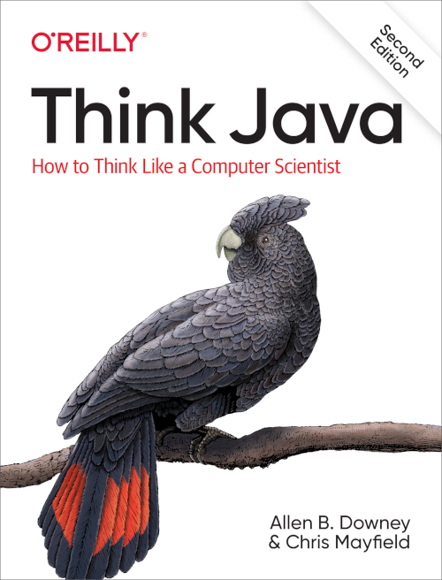
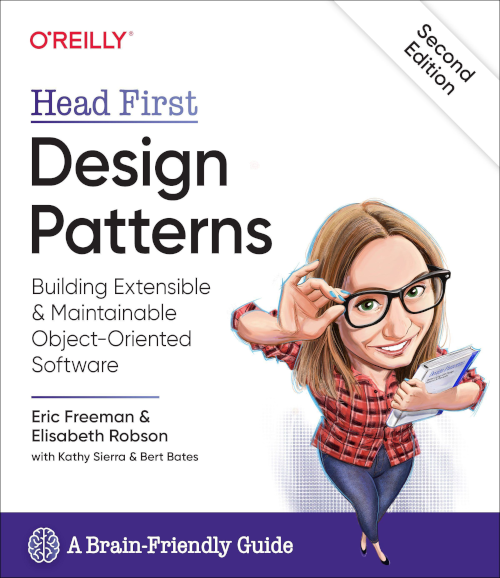

Literatuur
Contents
Literatuur#
In deze cursus wordt de programmeertaal Java gebruikt. Voor Objectgeoriënteerd programmeren I is het begeleidend boek Think Java: How to Think Like a Computer Scientist[DM19]. Een PDF versie van dit boek is te vinden op https://greenteapress.com/wp/think-java-2e/. We verwijzen hier en daar ook naar de online versie van dit boek op Trinket. Dit is een interactieve versie waar je tegelijkertijd codefragmenten kan schrijven en uitvoeren.

Tip
Alle code die in het boek wordt gebruikt kan je vinden op https://github.com/ChrisMayfield/ThinkJavaCode2.
Als je een student aan de Hanzehogeschool bent is het zeer waarschijnlijk dat je Python als eerste taal hebt geleerd. Je zult veel overeenkomsten met Java zien, maar ook voldoende verschillen! Om deze reden verwijzen we ook soms naar Java for Python Programmers, waar de twee talen naast elkaar worden gezet. Dit materiaal is ter ondersteuning en kan je helpen sneller bepaalde syntax en concepten te begrijpen[MR13].
Design Patterns#
Bij Objectgeoriënteerd Programmeren II (het logisch vervolg op Objectgeoriënteerd Programmeren I) wordt gebruik gemaakt van het boek Design Patterns: Building Extensible & Maintainable Object-Oriented Software[FR20].

Design patterns zijn algemene oplossingen voor veel voorkomende softwareproblemen. Deze design patterns zijn niet specifiek voor Java en zijn van toepassing op alle objectgeoriënteerde talen hoewel de relevantie per taal kan verschillen, bijvoorbeeld omdat een taal bepaalde fuctionaliteit heeft die een patroon overbodig maakt.
Een fraaie site waar we ook veel aan zullen refereren betreft refactoring.guru. Op deze site vindt je veel design patterns goed en uitgebreid, voorzien van fraaie interactieve visualisaties, toegelicht.
Voor een vergelijking met Python zou je Python Design Patterns misschien interessant vinden[Rho18]. Deze site neemt alle design patterns door die ook in deze cursus worden behandeld, inclusief een discussie over de relevantie en eventuele alternatieven voor Python.
Bibliografie#
- DM19
Allen B. Downey and Chris Mayfield. Think Java: How to Think Like a Computer Scientist. O'Reilly Media, 2019. ISBN 978-1492072508. URL: https://greenteapress.com/wp/think-java-2e/.
- FR20
Eric Freeman and Elisabeth Robson. Head First Design Patterns: Building Extensible and Maintainable Object-Oriented Software 2nd Edition. O'Reilly Media, 2020. ISBN 978-1492078005.
- MR13
Brad Miller and James Riely. Java for python programmers. 2013. URL: https://fpl.cs.depaul.edu/jriely/java4python/index.html.
- Rho18
Brandon Rhodes. Python design patterns. 2018. URL: https://python-patterns.guide/.